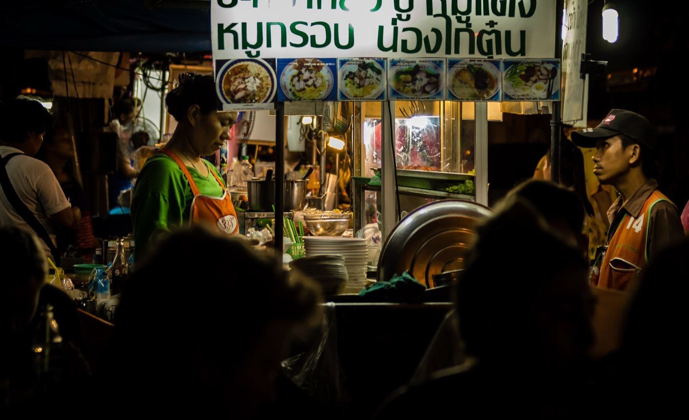
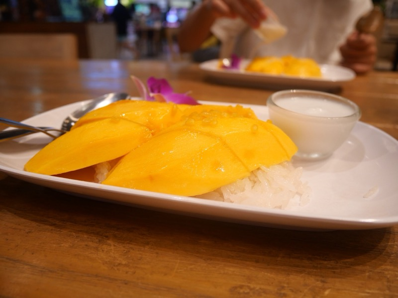

10:50
降落蘇汪那蓬 BKK
- 怎麼玩
- 下機先走快、先過移民關再說；TDAC 電子入境卡抵達前 3 天內兩人都要填好，海關看 QR 才不用排補填的隊。
- 注意
- 換匯不要在機場換太多（匯率差），先換 3,000-5,000 銖夠車錢跟第一餐，市區 Superrich 再換大宗。
9/24 週四
13:00 開始。她排的九攤全保留，順序改成不折返；夜生活給四個方向。



她排的九攤全保留。因為實際 13:00 才能開始，順序改成「從最東邊的 Ekkamai 一路往西吃回飯店」，BTS 不折返；晚上再從飯店出發去朱拉夜市，收尾的夜生活給你們四個方向選。
Phrom Phong 一帶按摩店密集，三個方向選一個。飛完一整天先鬆開。
泰國最大連鎖，乾淨、便宜、不用訂
商場裡的中高價位，順路
視障按摩師、手感最扎實、CP 值最高
她排的是 Nana Plaza，我把它保留，另外給三個性質完全不同的選項，看你們今晚想要什麼氛圍。
她原本排的 / 曼谷最有名的紅燈區綜合體，看熱鬧為主
1970 年代紐約頂樓公寓風 / 精緻、好拍、不用排隊
一條街三種玩法：地下酒吧 / 高樓 rooftop / 大型夜店
曼谷最時髦的夜生活區，調酒為主不是 bucket